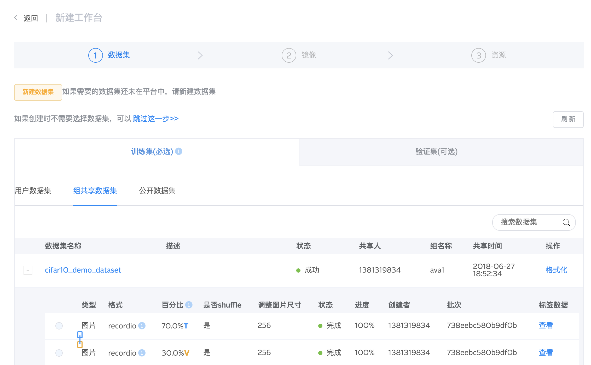
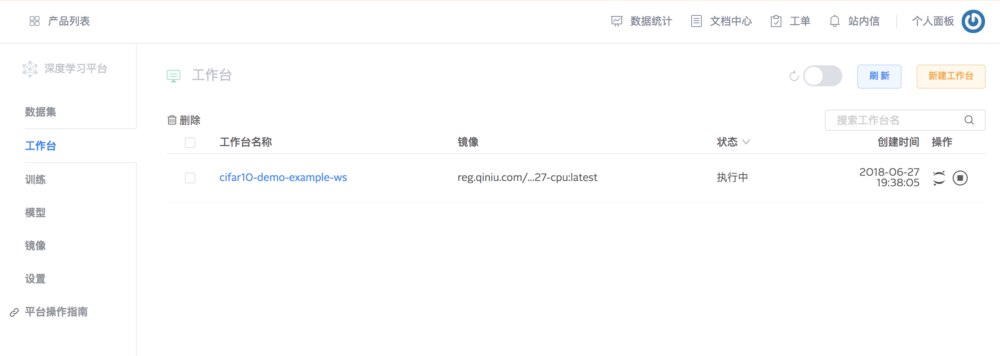
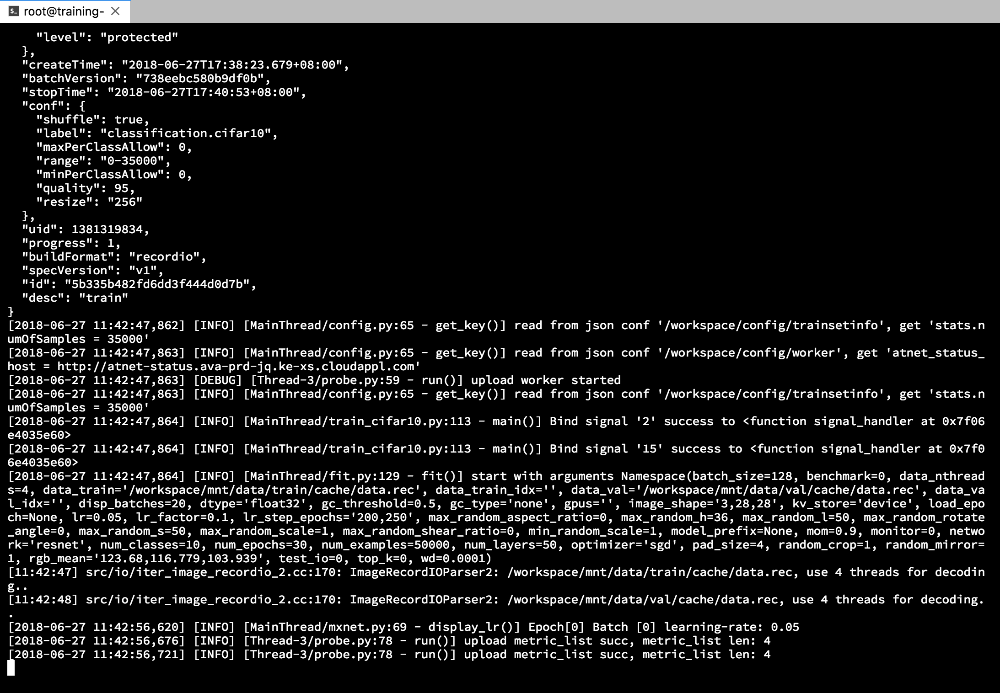
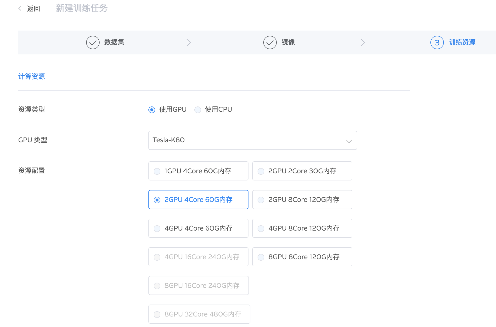
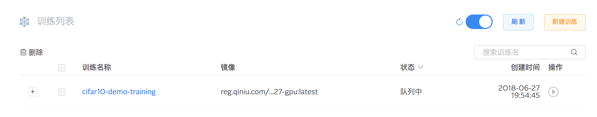
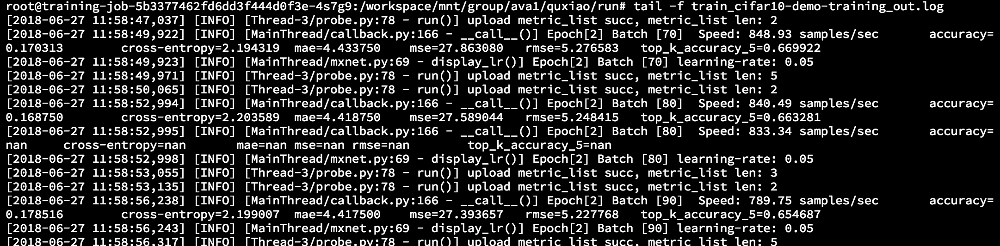
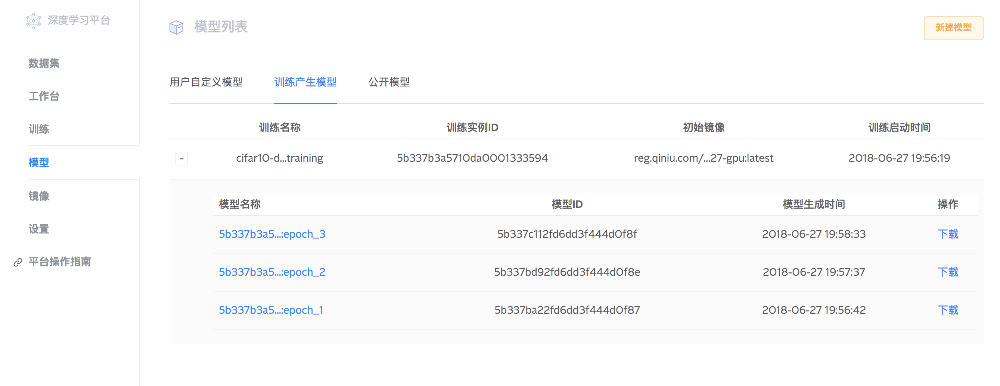

运行训练
CIFAR-10 的数据集准备好之后, 由于 AVA 平台的公开镜像中, 就包含 CIFAR-10 的训练样例代码 (整合了 AVA SDK), 因为我们通过运行公开镜像就可以直接运行训练了.
在工作台进行调试
在进行正式的训练之前, 我们可以在 AVA 平台上创建一个工作台, 用于确认、调试我们的训练代码. 我们在界面上选择 "工作台 -> 新建工作台", 之后在第一步选择数据集时, 将我们之前创建好的数据集选上, 如下图所示:

镜像需要选择: reg.qiniu.com/ava-public/ava-mxnet:py27-cpu, 之后我们就能在工作台页面看到我们创建的工作台了.

之后, 我们点击右侧的进入工作台按钮, 进行到 JupyterLab 界面, 选择 Terminal, 我们就可以在终端中进行操作了. 我们运行样例代码:
$ cd /workspace/examples/trainings/mxnet/simple/
$ ./start.sh
通过 Terminal 的输出, 我们可以看到训练代码是正常运行的.

创建训练任务
类似之前创建的工作台任务, 我们继续创建训练任务, 选择数据集之后, 选择镜像: reg.qiniu.com/ava-mxnet:py27-cuda80-cudnn6 (注意, 这次是 GPU 版本的镜像)
再选择训练资源

之后在 "训练代码的执行入口" 中, 填入: /workspace/examples/trainings/mxnet/simple/start.sh, 创建完之后, 我们就可以在训练列表页中, 看到训练任务了:

查看训练log
训练任务在运行中, 我们无法直接等到到训练任务所在的环境, 不过, 我们可以通过登录到之前创建的工作台, 来查看训练生成的日志.
进入之前的工作台, 然后查看寻运行 log, log 路径为: /workspace/mnt/group/ava1/<user_name>/run/<training_name>_out.log. 其中, <user_name> 是你的用户名, <training_name> 是你创建的训练任务名称. 如下图所示:

查看训练产生的模型
通过 AVA SDK, 训练任务可以自动帮我们把生成的模型上传至 AVA 平台进行管理, 我们可以通过 "模型 -> 训练产生模型" 页面, 查看或者下载这些模型, 如下图所示:
